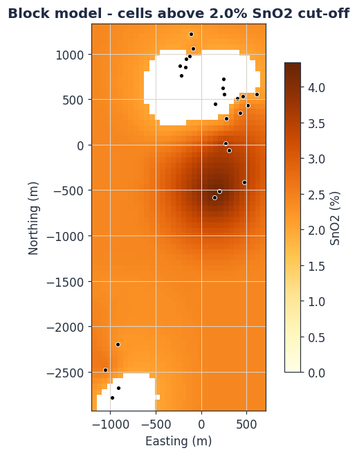
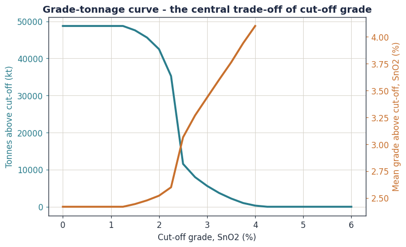
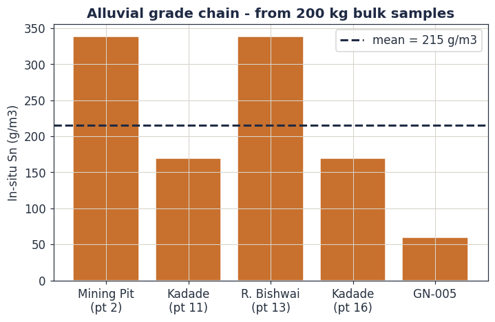

Block Models, Cut-off Grade and the Resource Statement
A kriged grid is not yet a resource. This final module turns estimates into tonnes, applies the economics that decide what is ore, attaches a classification, and assembles the formal Resource statement. It closes with a capstone: the honest Toro resource picture, set against the Achmmach and Alphamin Bisie benchmarks.
Learning objectives
- Construct a block model and convert estimated grade and volume into tonnes of ore and metal.
- Apply the volume-variance relationship and explain why block support matters.
- Derive a breakeven cut-off grade and read a grade-tonnage curve.
- Assign Resource classification to a block model using the kriging variance and drill spacing.
- Assemble a code-compliant Mineral Resource statement.
- Complete the alluvial g/m³ estimate and benchmark the whole Toro project.
6.1 The block model
A block model is the digital orebody: the deposit volume divided into a regular 3D array of rectangular blocks, each one carrying estimated attributes — grade of every element, density, classification, rock type, and the kriging variance behind each estimate.
The block size is a compromise. It should be no smaller than the data can actually resolve — a common guide is one quarter to one half of the drill spacing — and it should relate sensibly to the selective mining unit, the smallest volume the mining method can extract as ore or waste separately. Blocks far smaller than the data spacing imply a precision that does not exist; blocks far larger than the mining unit hide ore-waste detail the mine could actually exploit. Where an orebody boundary cuts through blocks, sub-blocking splits the edge blocks so the model honours the geological volume without inflating the whole array.
The workflow is strict and one-directional: define domains (Module 3), model the variogram of each domain (Module 4), then block krige each domain into its blocks (Module 5). Each block's grade is estimated only from samples in its own domain. The block model is the meeting point of every earlier module — and it inherits every earlier decision, sound or unsound.
6.2 From blocks to tonnes
Grade alone is not a resource; tonnage is half the answer. Each block converts to tonnes through its volume and its bulk density — the quantity Module 2 insisted you measure rather than assume:
The volume-variance relationship
Module 3 noted that averaging reduces variance. The volume-variance relationship makes that quantitative and it governs the whole block model. The dispersion variance \(D^2(v|D)\) — the variance of the grades of volumes \(v\) within a deposit \(D\) — shrinks as \(v\) grows. Krige's relationship states that dispersion variances are additive across nested supports:
This is not abstract. Selective mining units have a wider grade distribution than large panels; a model built on the wrong support will mis-state how much ore sits above cut-off. It is also the formal reason kriging smooths (Module 5): a kriged block model reproduces panel-scale variance but cannot, by construction, reproduce the full block-scale variance — which is the gap that conditional simulation (section 6.6) was created to fill.

6.3 Cut-off grade: the line between ore and waste
Not every block in the model is ore. The cut-off grade is the grade that divides material worth processing from material that is not. It is the single most powerful number in a resource statement, and it is fundamentally an economic quantity, not a geological one.
The simplest and most important form is the breakeven (marginal) cut-off: the grade at which the revenue from treating a tonne as ore exactly covers the cost of doing so. A tonne of ore at grade \(g\) per cent contains \(g/100\) tonnes of metal; selling it earns the metal price \(P\) reduced by the metallurgical recovery \(R\) and the payable fraction. Setting that revenue equal to the processing cost \(C\) per tonne:
Equation (6.3) shows why a Resource is always reported at a stated cut-off, and why that cut-off must rest on realistic, disclosed assumptions. A cut-off chosen on an optimistic tin price manufactures ore that vanishes when the price reverts. The cut-off also depends on which costs are counted: a marginal cut-off (processing only, for material already going to be moved) is lower than a breakeven cut-off that must also carry mining and overhead. Mineral Resource reporting uses a reasonable long-term price and a cut-off consistent with the RPEEE test of Module 1.
The grade-tonnage curve
Sweep the cut-off across its plausible range and plot two quantities: the tonnage that survives above cut-off, and the mean grade of that surviving tonnage. The result — the grade-tonnage curve — is the single most informative graphic a resource geologist produces.

Move the cut-off in the tool and watch tonnes trade against grade and against contained metal. Notice that contained metal — the product of the two — usually peaks at a low cut-off and then falls: pushing the cut-off up to chase a headline grade throws away real metal. The "right" cut-off is the one that maximises project value, not grade. The shape of this curve also exposes the smoothing of Module 5: a kriged model gives a flatter, more forgiving grade-tonnage curve than reality, which is why heavily smoothed estimates over-promise tonnes at high cut-off.
6.4 Classification in practice
Module 1 defined the Inferred, Indicated and Measured categories. Here we assign them to actual blocks. The Competent Person makes the call, but it is supported by quantitative evidence, and the kriging variance of Module 5 is central to it.
| Evidence | How it informs classification |
|---|---|
| Drill / pit spacing | The primary driver. Tighter spacing relative to the variogram range supports a higher category. |
| Kriging variance / standard error | A direct, block-by-block confidence map (Figure 5.3). Low-error blocks are candidates for Indicated or Measured; high-error blocks stay Inferred. |
| Number and configuration of informing samples | Blocks estimated from many well-distributed samples rank above blocks estimated from one or two on one side. |
| Conditional simulation | Used to test, for example, whether grade in a production-sized volume is known to within ±15% at 90% confidence — an increasingly standard criterion. |
| Geological continuity and QAQC | Confident geology and a clean QAQC record are preconditions for any category above Inferred. |
Classifying purely on a raw kriging-variance threshold scatters isolated Measured blocks through an Indicated background — a "spotted dog" pattern that is geologically absurd and unmineable: you cannot plan a mine around single high-confidence blocks. Classification must produce coherent, contiguous volumes. In practice the CP defines confidence as broad regions — commonly via drill-spacing criteria validated by conditional simulation — not block by isolated block.
6.5 The Mineral Resource statement
The estimate culminates in a single, formal table: the Mineral Resource statement. Its structure is dictated by the codes of Module 1, and every cell carries accountability.
| Classification | Tonnes | Grade | Contained metal |
|---|---|---|---|
| Measured | by domain | % Sn or g/m³ | tonnes Sn |
| Indicated | by domain | … | … |
| Measured + Indicated | subtotal | … | … |
| Inferred | reported separately | … | … |
The table never travels alone. It must be accompanied by: the effective date; the cut-off grade and the price, recovery and cost assumptions behind it; a statement of the RPEEE basis (the mining envelope); the name and sign-off of the Competent or Qualified Person; and, under JORC, the completed Table 1 documenting sampling, QAQC, estimation and classification on an if-not-why-not basis. A number without this apparatus is not a Resource — it is an assertion.
Report tonnes and grade to a precision that reflects their real confidence. An Inferred Resource quoted as "5,234,718 t at 1.07% Sn" is dishonest: the false precision contradicts the category. "5.2 Mt at 1.1% Sn" tells the truth about what is known. Significant figures are part of the estimate.
6.6 Conditional simulation
Kriging gives the single best estimate of each block — and, by the smoothing property of Module 5, deliberately understates how much block grades really vary. For questions that depend on that variability — how often a mining bench will breach a cut-off, the true risk around a tonnage figure, how to classify by a confidence criterion — a different tool is needed.
Conditional simulation generates many alternative block models — realisations — each of which honours the data at the sample points, and each of which reproduces the real histogram and the real variogram. No single realisation is "the" answer; the spread across realisations is the answer. It is a direct, honest map of uncertainty.
Use kriging when you want the best single estimate of grade — the resource block model itself. Use conditional simulation when you want the uncertainty — risk analysis, classification criteria, grade-control decision-making, and realistic recoverable-resource prediction. They are complementary, not competing: a modern resource study runs both.
6.7 Reconciliation and the path to a Reserve
An estimate is a prediction, and a prediction must eventually be checked against reality. Reconciliation compares the resource model, the grade-control model and what the processing plant actually received — tonnes, grade and metal — usually expressed as mine-call factors. Persistent divergence sends you back through this course: a reconciliation problem is almost always a sampling, density, domaining or top-cut problem in disguise.
Beyond the Resource lies the Reserve. The Measured and Indicated blocks are passed into engineering studies — Scoping, then Pre-Feasibility, then Feasibility — which apply the modifying factors of Module 1 (mining method, dilution, recovery, costs, permits, markets). The economically mineable output of at least a Pre-Feasibility Study is the Ore Reserve. That is the journey Achmmach completed to publish 7.0 Mt at 0.82% Sn of Proven and Probable Reserve.
6.8 Completing the alluvial estimate
The block-model machinery above was demonstrated on the kriged concentrate grade. But Module 2 was emphatic: a defensible alluvial resource is a volume-grade quantity in g/m³, and the XRF assay supplies only one factor in that chain. Here we complete the chain with the Toro field data, using equation (2.4):
The field logs record the heavy-mineral-concentrate mass recovered from each 200 kg bulk sample of wash gravel. Combining those yields with the mean Sn grade of the concentrate (about 1.8% Sn) and an assumed in-situ gravel density of 1.9 t/m³:
| Bulk sample | HMC yield | In-situ Sn (g/m³) |
|---|---|---|
| Mining Pit (point 2) | 1.00% | 339 |
| River Bishwai (point 13) | 1.00% | 339 |
| Kadade (point 11) | 0.50% | 169 |
| Kadade (point 16) | 0.50% | 169 |
| GN-005 | 0.18% | 59 |

Equation (6.4) is a product, so the relative errors of its factors add: a 20% error in yield, 15% in concentrate grade and 10% in density compound to roughly a 27% error in g/m³. The 215 g/m³ mean rests on only five bulk samples, an assumed density that has never been measured at Toro, and a yield read from field washing that had no QAQC. This is the quantitative reason the pitting programme must deliver, for every pit: a weighed bulk sample of measured volume, a measured in-situ density, and a logged wash-layer thickness. Without those, the alluvial estimate cannot rise above an Exploration Target.
6.9 Capstone: the Toro resource picture
Bring the whole course to bear on one honest question: where does the Toro tin project actually stand, and what must happen next?
Status. Two distinct Exploration Targets — an alluvial placer across the Bishiwai, Yadabongo and Kadade drainages, and a primary greisen-pegmatite target on the LV 029 cupola. Neither is a Mineral Resource, and the reasons are now precise rather than vague.
Why not yet a Resource. The grade data resolve to 26 pit locations (Module 2). The variogram has a relative nugget of 0.55 — over half the variance unstructured (Module 4). Cross-validation returns a correlation of 0.24: unbiased but imprecise (Module 5). The alluvial g/m³ figure rests on five bulk samples and an unmeasured density (Module 6). Every one of these is a data-density or data-quality limit, and together they place Toro firmly, correctly, at Exploration Target.
What the data do support. A real, encouraging signal: a structured grade continuity of roughly 1 km, concentrate grades averaging 2.3% SnO₂, a reconstructed alluvial grade near 215 g/m³ Sn, and a coherent higher-grade core through Bishiwai-Yadabongo. Enough to justify the next tranche of capital — which is exactly what an Exploration Target is for.
Benchmarking the destination
Module 1 introduced the benchmarks; now read them as a resource geologist. Achmmach reached 22.4 Mt at 0.70% Sn of Measured and Indicated Resource after roughly 18 years and systematic drilling. Alphamin Bisie is among the highest-grade tin mines on Earth, its resource an order of magnitude richer in grade. Toro's primary target has no classified grade at all yet. The benchmarks are not discouragement — they are a specification. They show the level of data, rigour and documentation a tin Resource must reach, and this course is the method for reaching it.
The path from Exploration Target to Mineral Resource
| Action | Module | What it changes |
|---|---|---|
| Drill the 13 priority collars; systematic infill pitting on a defined grid | 2, 5 | Raises data density so grade continuity can be assumed, not implied |
| Run a designed QAQC stream — standards, blanks, blind duplicates — from the first sample | 2 | Lowers the nugget; makes the database certifiable |
| Measure in-situ bulk density by domain and weathering state | 2, 6 | Removes the largest assumption in the tonnage and the g/m³ chain |
| Record wash-layer thickness and bulk-sample volume on every pit | 3, 6 | Enables correct length-weighted compositing and a true g/m³ estimate |
| Re-fit variograms per domain; block krige; classify with QKNA and simulation | 4, 5, 6 | Converts an Exploration Target into a classified Mineral Resource |
| Sign-off by a Competent Person and a code-compliant report | 1, 6 | Makes the Resource public and bankable |
Course conclusion: the workflow as one chain
You have now travelled the full method. Step back and see it whole — six modules, one unbroken chain of reasoning, every link carrying the integrity of the link before it.
1. Foundations — know what you are producing, under which code, and who is accountable. 2. Sampling and data — collect representative samples, control the error, certify the database. 3. EDA and statistics — understand the distribution and, decisively, define the stationary domains. 4. Variography — measure and model the spatial continuity of grade. 5. Estimation — krige the best linear unbiased estimate, and obtain its quantified uncertainty. 6. Reporting — turn estimates into classified tonnes and metal, and report them honestly. Each module is necessary; none is sufficient alone.
And hold on to the deeper lesson, the one the Toro data taught more forcefully than any clean textbook dataset could. Resource estimation is not the manufacture of a single confident number. It is the disciplined, quantified, defensible statement of what is known and how well it is known — including, when the data demand it, the honest verdict that the answer is "not yet, and here is precisely why." A geologist who can deliver that verdict with the rigour of this course, and chart the path beyond it, is doing resource estimation at the highest level. That is the standard the Toro tin project — and you — are being built to meet.